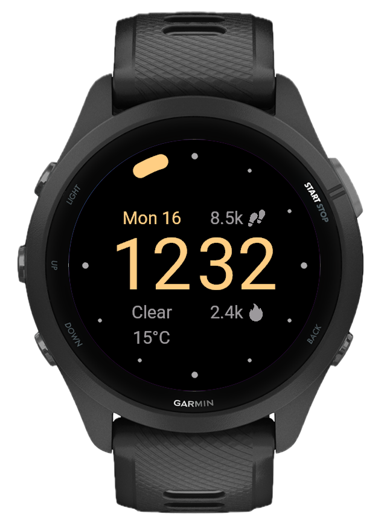
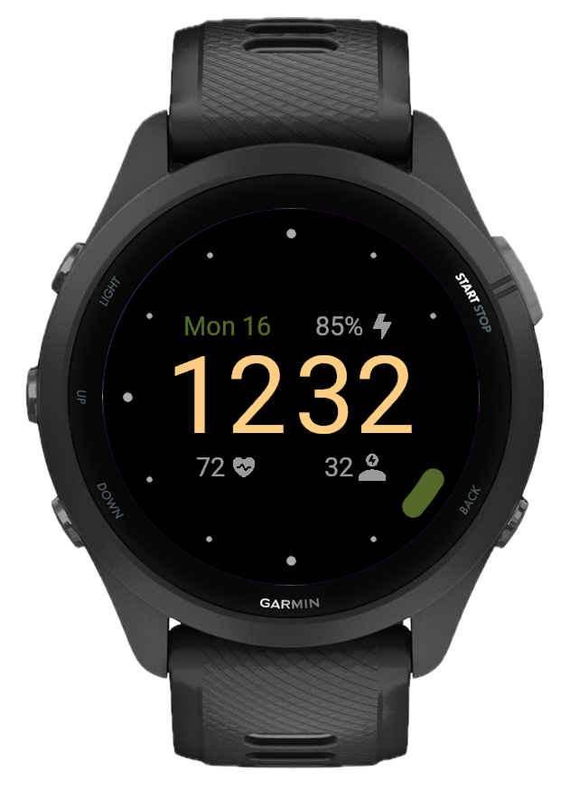
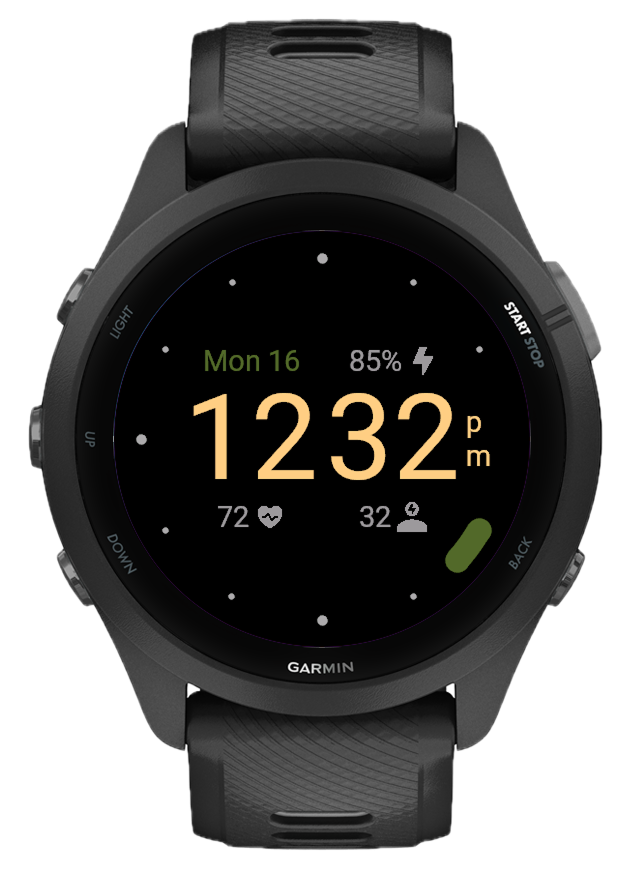

Rain that actually falls
The raindrop animation runs continuously. Toggle the hour animation and dot animation independently: keep it subtle, make it dynamic, or turn it off entirely. One watch face, infinite pace.

Three fields, endless combinations
Pick what matters for each of the three data fields: steps, calories, heart rate, battery, weather, body battery, stress, floors, active minutes, recovery time, training status, VO2 max, or nothing at all. Configure each position independently.

Full color control
Change the arc color, time color, date color, background, and dots color independently. Works with 12 or 24-hour format, multiple seconds styles, and temperature in °C or °F. Every detail is adjustable.
Clean, minimal face
A stripped-back layout with clear time display and essential data at a glance. No distractions — just the information you need, right when you need it.

Built for Garmin, designed to last
No clutter, no ads, no subscriptions. Raindrop works on 75+ Garmin devices, from Fenix to Forerunner to Venu, and stays out of the way while keeping everything you need within a glance.
What's new
- Approach® S50, S70 42mm, S70 47mm
- D2® Mach 2 Pro
- Descent® G2, Mk3 43mm, Mk3 51mm
- Forerunner® 170, 170m, 70
- 3D Time feature added
- Switch between flat and 3D in settings
- Arc animation bug fixes
- Added Recovery Time, Training Status, VO2 Max fields
- Fixed Reset All button to preserve applied field and color changes
- Animated arc ring showing time progress (5-second segments with merge animation)
- 12 hour-marker dots on the ring (main + small, scatter/gather animation on wake)
- Seconds mode: arc or orbiting dot with sub-second smooth interpolation
- Always-On Display (AOD) with minimal arc + dim time
- 12h/24h time format with stacked am/pm indicator
- Steps, Calories, Floors, Active Minutes
- Heart Rate, Body Battery, Stress
- Weather (condition + temperature, with °C/°F)
- Date
- 14 preset themes (Classic, Ember, Matcha, Ocean, Arctic, Midnight, etc.)
- Per-element color picker: arc, time, date, background, dots (35 colors)
- Hour animation toggle
- Seconds style (arc / dot)
- Time format (12h / 24h)
- Temperature unit (°C / °F)
- Reset All